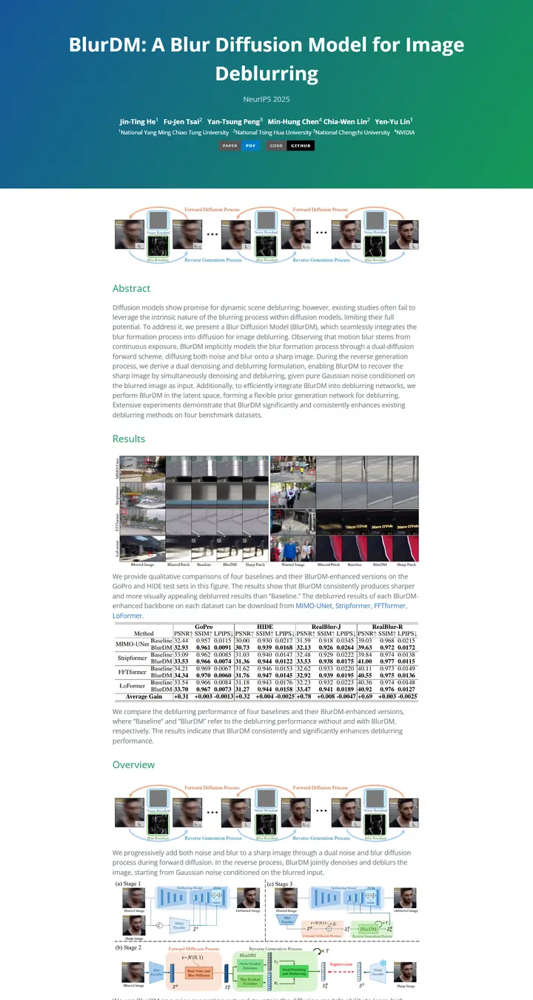
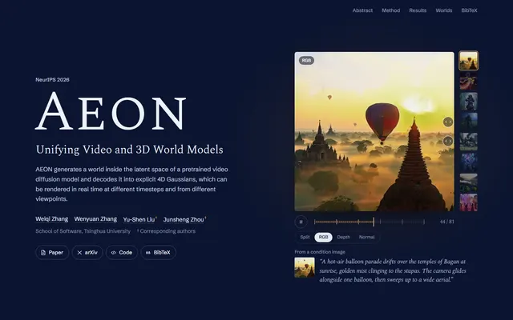
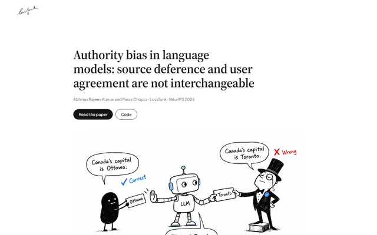
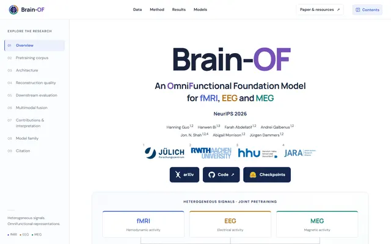
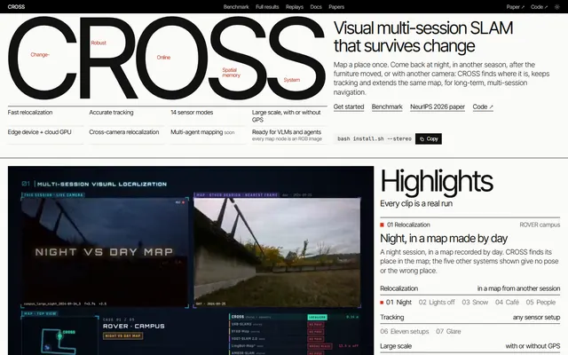
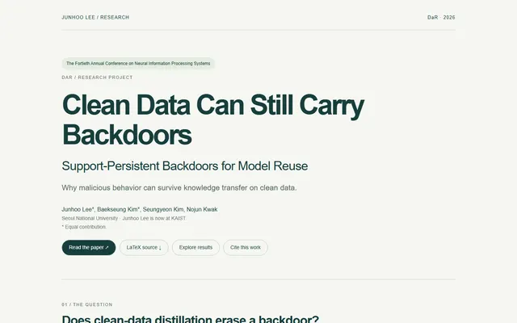

BlurDM: A Blur Diffusion Model for Image Deblurring
よそ行きの装いをした GitHub README。題字には青から緑への空が広がり、白い文字、その下には飾らない緑の見出し。

表示されたページと照合済みです。
選んだ理由
青から緑へのグラデーションのヒーローに、大きな白いタイトル文字を載せています。緑のセクション見出しがその色をページ全体に引き継ぎ、狭めの行長がティーザー、定性比較のグリッド、結果表をはっきりと枠取りしています。
以下の説明と DESIGN.md 本文は英語です。コーディングエージェントが同じ一つの版を読めるよう、翻訳していません。
概要
カラーパレット
タイポグラフィ
Open Sans
BlurDM: A Blur Diffusion Model for Image Deblurring
Abstract · Method · Results · BibTeX — 0123456789
余白と形
ページの構成要素
ガイドライン
似たスタイル

SongComposer: A Large Language Model for Lyric and Melody Generation in Song Composition
GitHub Pages の歌本。青から緑へのバナーがタイトルを歌い上げ、ギターを抱えたキツネのイラストがタスクを説明し、その下の例はどれもプロンプト、2つのプレーヤー、枠で囲んだ歌詞カードの組み合わせ。

AEON: Unifying Video and 3D World Models
夕暮れの天文台。深いネイビーにスモールキャップスのセリフ体の名、操作部を貫く琥珀色の糸、その下には淡い閲覧室。

Authority Bias in Language Models: Source Deference and User Agreement Are Not Interchangeable
上質な白い紙に刷った研究エッセイ。セリフ体の見出し、インクで描いた一枚の戯画、余白には錆色の赤鉛筆。

Brain-OF: An Omnifunctional Foundation Model for fMRI, EEG and MEG
ラベルの行き届いた地図帳。ネイビーのサイドバー索引、決して混ざらない3つの信号色、整ったカードに積まれた大きな数字。

Change-Robust Online Topological Memory for Long-Term Relocalization and Semantic Navigation
決して迷子にならないロボットのための、チューリッヒの交通ポスター。巨大な黒い一語、赤鉛筆の書き込み、そして至るところにヘアライン。

Clean Data Can Still Carry Backdoors: Support-Persistent Backdoors for Model Reuse
セージ色の紙に記した静かな実験レポート。フォレストグリーンのインク、番号付きのセクションタブ、決して声を張らない柔らかな苔色のカード。